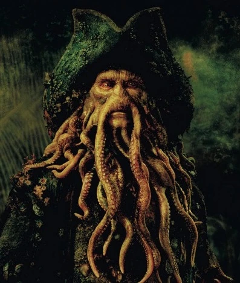

📖 Descrizione
Davy Jones è il terrificante capitano della Flying Dutchman. Metà uomo e metà creatura marina, domina gli oceani con il suo oscuro potere.
⚔️ Abilità
- Controllo del Kraken
- Immortalità
- Comando dei mari
- Teletrasporto marino
🚢 Nave
La Flying Dutchman è una nave leggendaria capace di emergere dalle profondità marine e navigare anche sott'acqua.
🧭 Curiosità
Il cuore di Davy Jones è custodito in uno scrigno segreto nascosto lontano dai mari. Chi lo possiede può controllarlo.